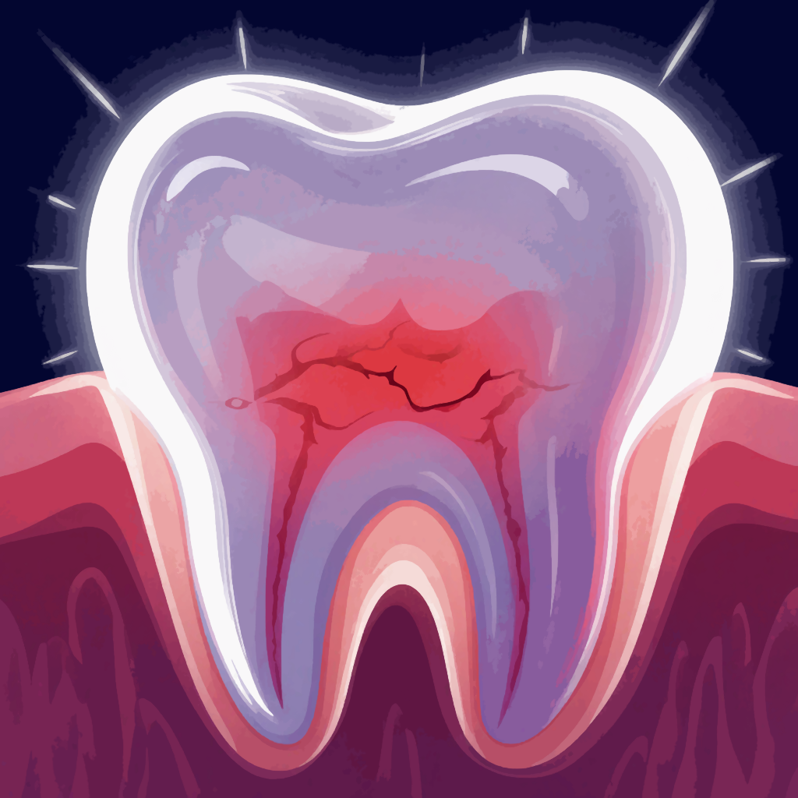
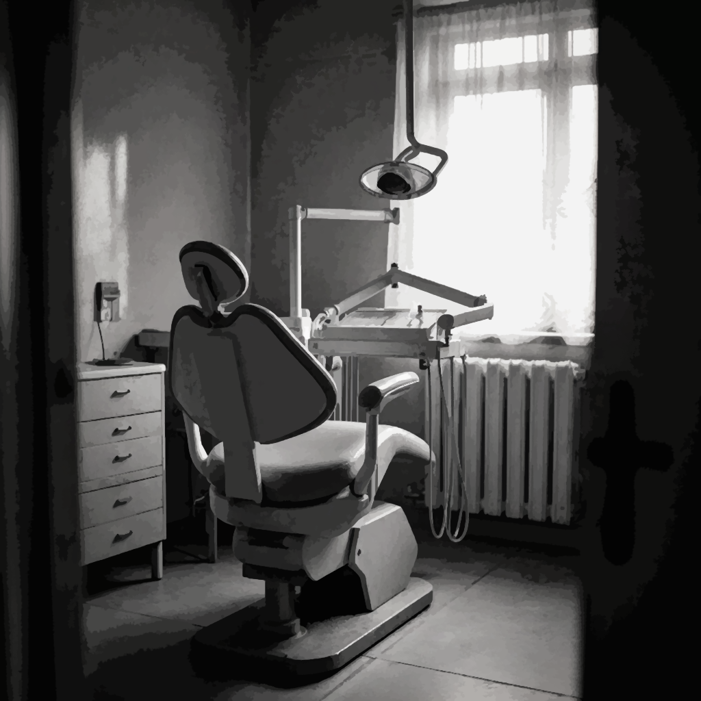
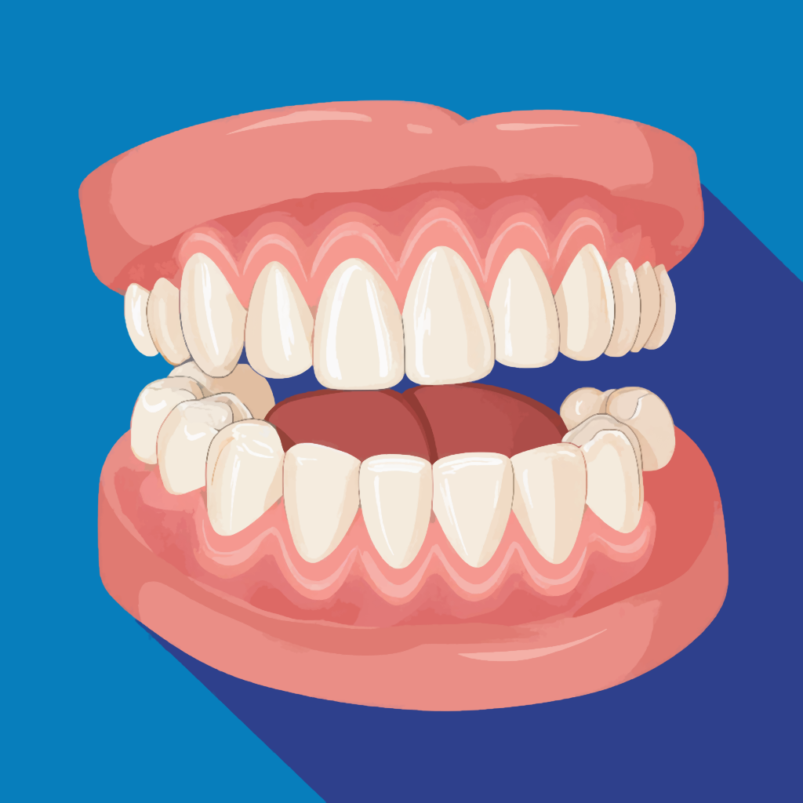
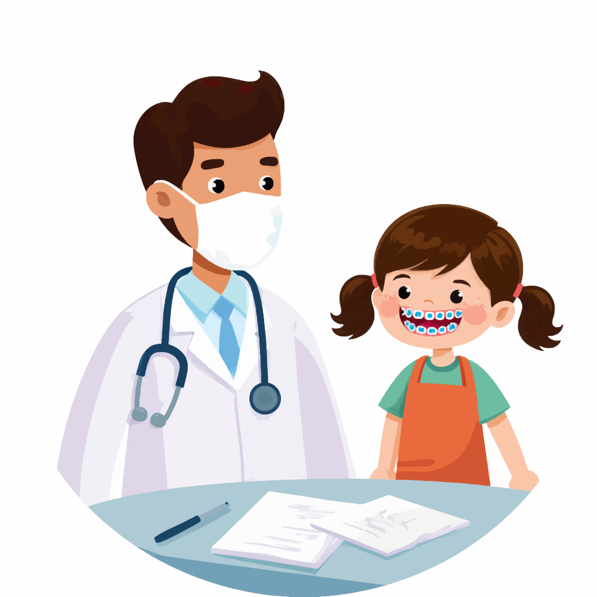
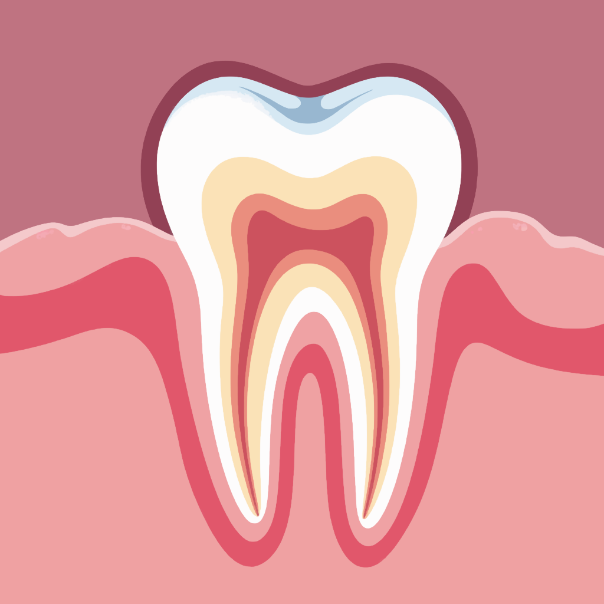
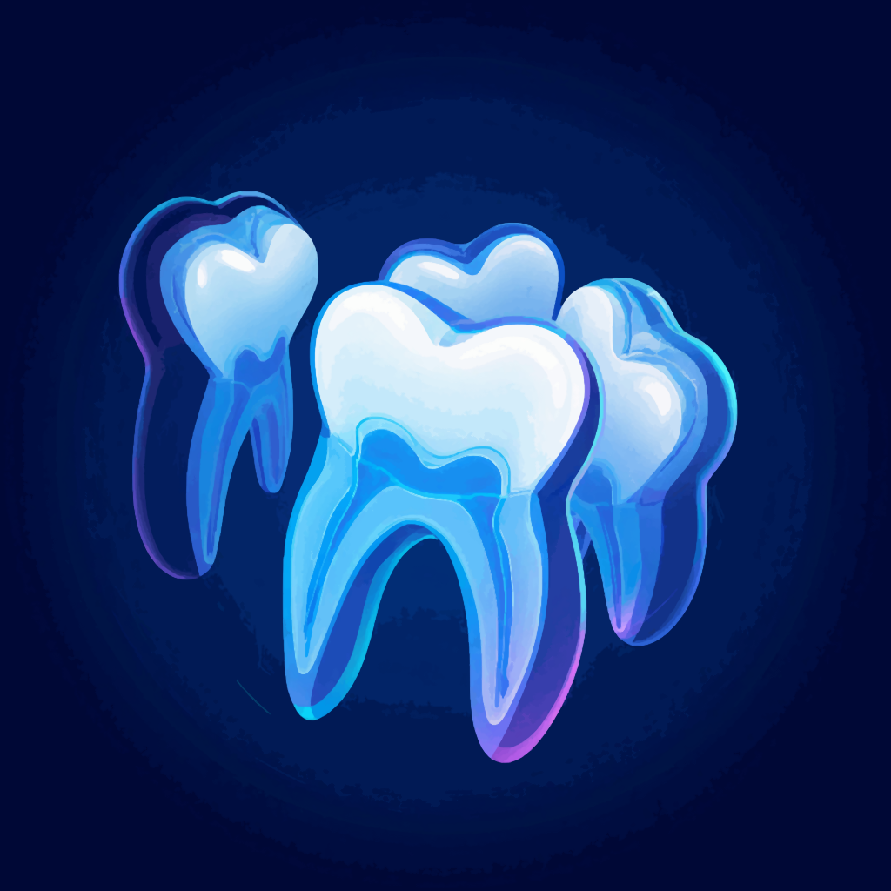
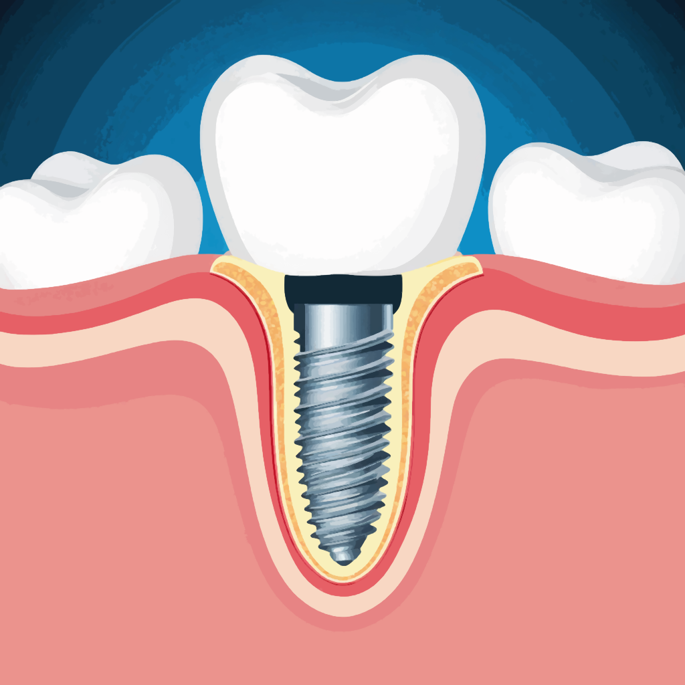
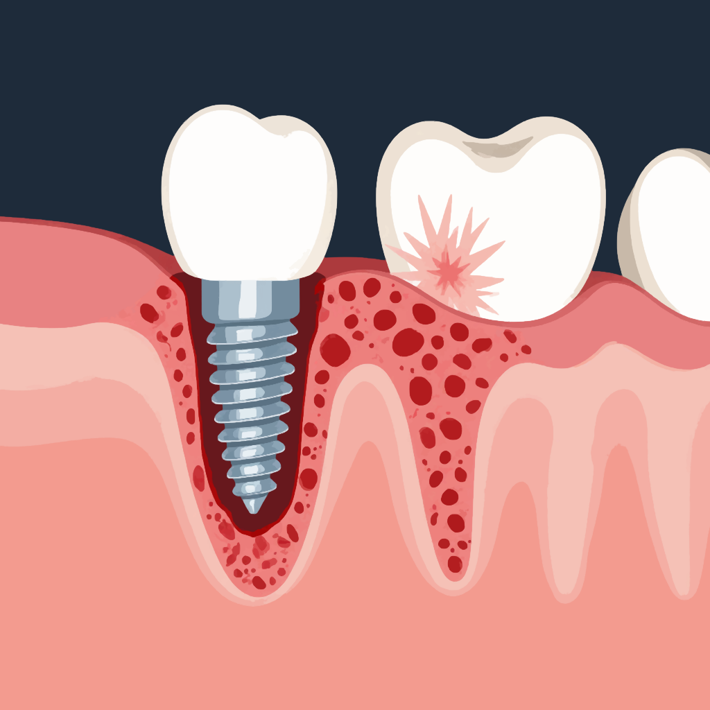
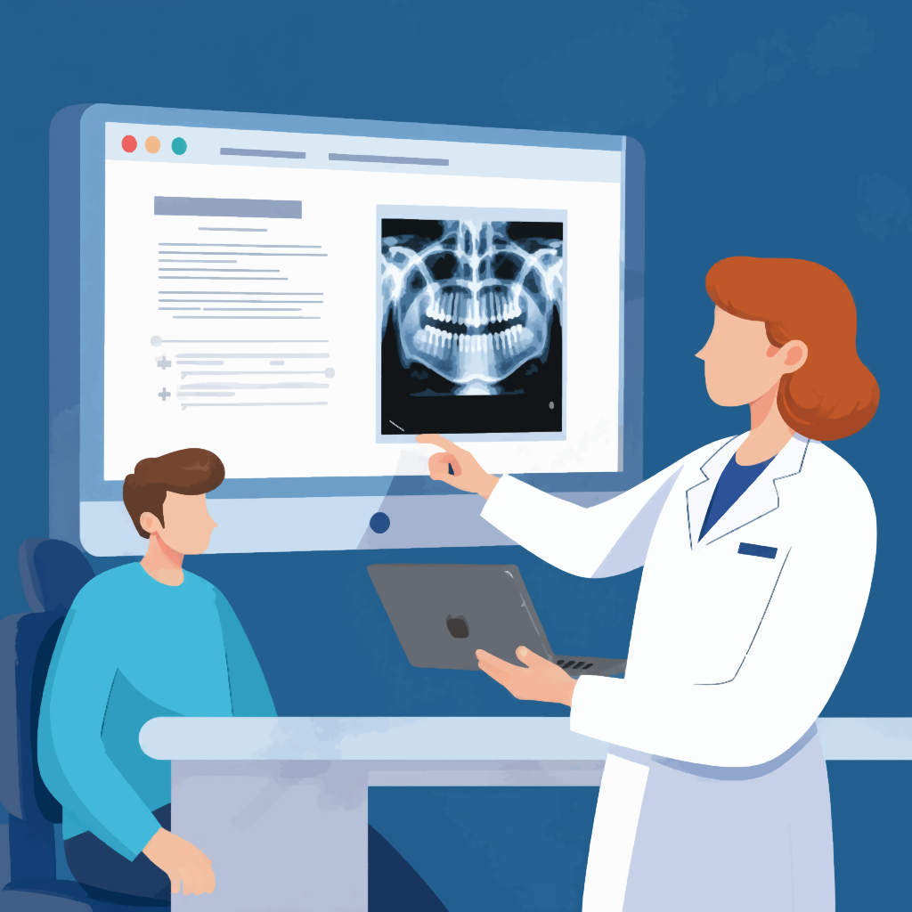

Стоматологические статьи
Пульпит: когда болит зуб и что с этим делать
Здравствуйте! Меня зовут Анна, я стоматолог с более чем 15-летним опытом. В этой статье я постараюсь простым языком объяснить, что такое пульпит, почему он появляется, какие бывают симптомы и чем он отличается от других стоматологических заболеваний.
Улыбка сквозь время: от страха к искусству. Взгляд из кресла стоматолога
Автор: Анна, стоматолог с 15-летним стажем
Для многих слово «стоматология» до сих пор ассоциируется с гулом бормашины и легкой дрожью в коленях. Но за 15 лет практики я стала свидетелем настоящей революции в этой сфере. Поход к зубному врачу перестал быть наказанием и превратился в заботу о себе — а иногда и в настоящее искусство. Давайте пройдем этот путь вместе: от воспоминаний прошлого к технологиям будущего.
Терапевтическая стоматология: путь к здоровой улыбке
Автор: Анна, врач-стоматолог с 15-летним опытом практики
Терапевтическая стоматология — это словно искусство восстановления гармонии в улыбке. Она соединяет в себе науку, технику и человеческое участие. Если хирургия — это громкое вмешательство, то терапия в стоматологии похожа на мягкий шёпот, который предупреждает бурю.
Искусство улыбки: полный гид по современному протезированию зубов
Автор: Анна, стоматолог-эксперт с 15-летним стажем
Как часто, глядя в зеркало, вы ловите себя на мысли, что улыбка уже не та, что была в юности? Потеря зубов — это не только эстетическая проблема. Мы теряем уверенность, комфорт и радость общения. Но современная стоматология способна на настоящее чудо: она не просто восстанавливает утраченное, а создает нечто новое — красивое, надежное и долговечное.
Ортодонт: архитектор вашей улыбки и здоровья
Путеводитель от эксперта с 15-летним стажем
Здравствуйте, дорогие читатели! Меня зовут Анна, и вот уже 15 лет я помогаю людям обретать не только красивые улыбки, но и крепкое здоровье. За годы практики в стоматологии я убедилась в одном простом, но очень важном факте: нет ничего ценнее уверенности, которую дарят ровные и здоровые зубы. А главный специалист, который отвечает за эту гармонию, — врач-ортодонт.
Пародонтология: искусство сохранить улыбку
Полное руководство от стоматолога с 15-летним опытом
Автор: Анна, эксперт-стоматолог
Здравствуйте, дорогие читатели! Меня зовут Анна, и уже 15 лет я каждый день слышу один и тот же
вопрос от
пациентов:
«Доктор, почему зубы здоровые, а десны кровоточат?»
Большое руководство по удалению зубов: от кариеса до импланта
Рассказывает стоматолог с 15-летним стажем
Здравствуйте, дорогие читатели! Меня зовут Анна, и я 15 лет своей жизни проработала стоматологом-хирургом. За это время я провела тысячи удалений — от самых простых, занимающих пару минут, до сложнейших операций, о которых и расскажу. Моя цель — не напугать вас, а просветить. Знание — это лучшая анестезия от страха. Когда понимаешь, что и почему происходит в кресле врача, становится гораздо легче дышать.
Имплантация зубов: ключ к новой улыбке и полноценной жизни
Автор: Анна, эксперт-стоматолог с 15-летним опытом работы
Здравствуйте, дорогие читатели! Меня зовут Анна, и уже 15 лет я помогаю людям находить не только
красивые
улыбки, но и уверенность в себе, комфорт и радость жизни.
Потеря зуба — это всегда стресс. Она похожа на утрату маленькой, но очень важной детали в сложном
механизме под названием «челюсть». Без этой детали механизм начинает давать сбой: соседние зубы
смещаются, прикус нарушается, а улыбка теряет гармонию.
Неудачная имплантация зубов: когда мечта об идеальной улыбке сталкивается с реальностью
Автор: Анна, стоматолог с 15-летним опытом работы
В моей практике было много пациентов, которые приходили с сияющими глазами и одной мечтой — навсегда забыть о проблемах с зубами благодаря имплантации. И я, как врач, искренне восхищаюсь возможностями современной дентальной имплантации. Это действительно революционная технология, которая возвращает людям не только зубы, но и качество жизни, уверенность в себе и возможность наслаждаться простыми радостями: откусить хрустящее яблоко, смеяться без стеснения, не прикрывая рот ладонью.
Искусство видеть невидимое: всеобъемлющий гид по методам диагностики в стоматологии
Автор: Анна, стоматолог с 15-летним опытом работы
В стоматологии, как и в детективном романе, редко все оказывается таким, каким кажется на первый взгляд. Белоснежная улыбка может скрывать коварный кариес, а легкая боль — быть лишь верхушкой айсберга серьезной проблемы. За 15 лет практики я убедилась в главном: точный диагноз — это 90% успешного лечения. Диагностика — не только наука, но и искусство: умение слушать, наблюдать и, главное, видеть невидимое. Приглашаю вас в путешествие по лабиринтам современной стоматологии, где каждый шаг открывает новые грани этого искусства.